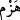
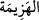
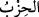
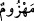
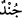
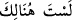

yarayan (__WORD__), te’kîd lâm’ı (__WORD__) ve hitap kâf’ı (__WORD__). Dilciler, buradaki (__WORD__)’ın, gösterilen
şeyin uzak olduğunu ifâde etmede (__WORD__)’nin (__WORD__)’ına benzediği görüşündedir.
el-Kâmus’ta der ki: (__WORD__), kırmak demektir. “Düşmanı kırdı, bozguna uğrattı”
anlamında (__WORD__) denir. İsim şekli hezîmet (__WORD__)’tir. (__WORD__) şeklindeki
kullanım ise “bir şeyi elle bastırdı ve orada çukur oluştu” anlamındadır.
el-Müfredât’ta der ki: (__WORD__), sert ve güçlü bir topluluk demektir.
Şeyhzâde ifâdenin i’râbı sadedinde der ki: (__WORD__) “bir ordudur” ifâdesi, ibârede yer
almayan bir mübtedânın haberidir. ‘Kabilelerden oluşmuş’ mânâsına gelen (__WORD__)’
ifâdesi ise onun sıfatıdır. Mânâ şu şekildedir: Bütün hizipler, yâni peygamberleri
yalanlama hususunda hizipleşip bir araya gelen ve kahr u perişan edilen bütün geçmiş
nesiller, şeklindedir. ‘Bozguna uğratılmaya mahkûm’ anlamındaki (__WORD__) kelimesi ise,
var olduğu farzedilen mübtedânın ikinci haberi yahut da (__WORD__)’ün sıfatıdır. ‘Şurada’
mânâsına gelen (__WORD__), (__WORD__)’ün zarfı, yâni nerede bozguna uğratıldığını gösterir, yahut
da (__WORD__)’ün bir diğer sıfatıdır. Kelime, Mekkelilerin biraraya gelerek biraz önceki
sözleri konuştukları yeri, yâni Mekke’yi göstermektedir. Mânâ: Yakında Mekke’de
bozguna uğrayacaklar, şeklinde olmaktadır ki bu, gayb olan bir şeyi haber vermek
demektir. Çünkü bunlar, gerçekten de biraz önceki söz alış-verişinde bulundukları yerde
bozguna uğramışlardır.
Bazı âlimlere göre ise, (__WORD__) ifâdesi, böylesine tehlikeli ve günah bir sözü
sarfedebildikleri mertebeyi göstermektedir. O zaman ifâde, Arapların, ehli olmadığı bir
işe kalkışan biri için söyledikleri ‘senin orada ne işin var?’ anlamına gelen (__WORD__)
örneğine benzer. Çünkü boş hevesleri ve müthiş kıskançlıkları onları “Kur’an
aramızdan ona mı indirildi?” demeye sürüklemiş; onlar da bu dürtüye icâbet ederek
kendilerini, böylesine büyük ve tehlikeli bir ifâdeyi söyleyebilecek bir mertebede
görmüşlerdir. Zira bu söz, mülk ve melekûtün Sahibi’ne (c.c.) itiraz etmek demek
olduğu için böyle bir şeye kalkışmak ve kendisini böyle bir mertebeye ehil görmek, hiç
kimsenin haddi değildir.
Âyetin mânâsı şudur: Bu Mekkeliler de peygamberlerine karşı hizipleşip bir araya
gelen kâfirler gibi, çok yakında kırılıp bozguna uğratılacaklardır. Sen onların sözlerine
aldırış etme; saçmalıklarına kulak asma!
Buna göre, ifâdede kâfirlerin de tanrılarının da âciz olduklarına işâret edilmiş olur.
Yâni ne bu kâfirlerin bir delili var; ne de bunların tanrılarının başkalarına yarar veya
zarar vermeğe imkânları; kendilerini savunacak, gelecek zararları önleyebilecek bir
güçleri var, demektir.
Şeyhim ve Senedim (Osman Fazlî-i İlâhî) Hazretlerin’den (k.s.) işittim, şöyle
diyordu: Kâfirler taşlara dayanıyorlar; bildiğiniz gibi, kalelere ve surlara istinad
ediyorlar. Mü’minler ise “Lâ ilâhe illâllah Muhammedün Rasûlûllah” kelimesine
dayanıyorlar. Görüyorsunuz ki, onlar Allah’a tevekkül etme kalesi dışında hiçbir kaleye